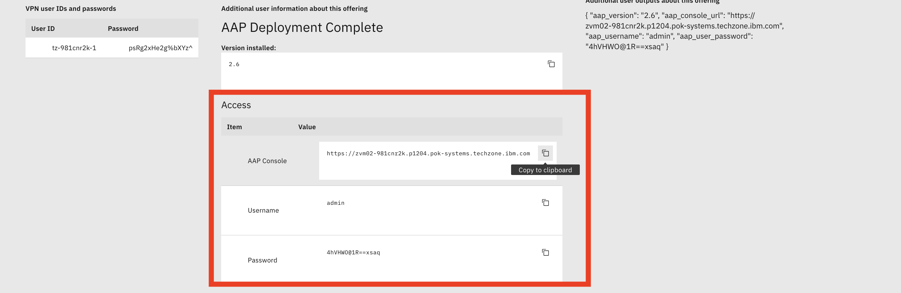
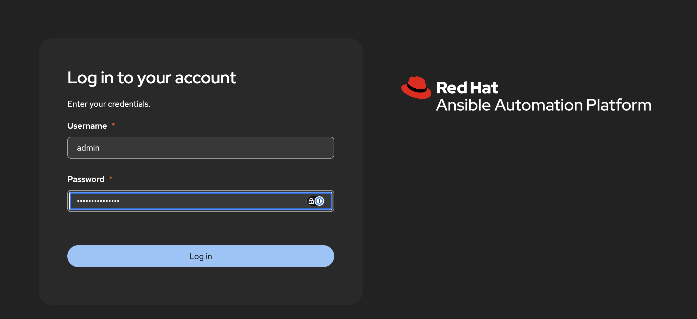
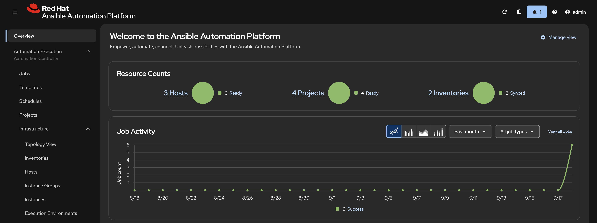

Ansible Automation Platform (AAP) for z/OS
The Ansible Automation Platform (AAP) for z/OS image provisions a z/OS 3.2 environment alongside a Linux sidecar running Ansible Automation Platform (AAP) 2.6. AAP is pre-configured out of the box — an inventory pointing at the z/OS guest, credentials, an execution environment with ZOAU, and a full set of job templates are all created automatically at provisioning time. No manual setup is required; you can launch your first job template within minutes of the environment becoming ready.
What's Included
- z/OS 3.2 — See Base z/OS Configuration for the full system layout
- Ansible Automation Platform 2.6 — Installed on the Linux sidecar (s390x), accessible via browser
- Pre-configured inventory —
AAP z/OSinventory withzos_host(the z/OS guest) already added - SSH credential —
z/OS Host SSH Keymachine credential wired to the z/OS host - Execution Environment —
aap4zos EE(ZOAU 1.4,ibm.ibm_zos_core2.0.0) pulled from Quay - Job templates — 14 ready-to-run templates covering data sets, TSO, JCL, operator commands, APF, WTOR, certificates, and more
Quick Start
- Reserve the image from the TechZone catalog — provisioning takes ~1 hour
- When the reservation is Ready, open the AAP web UI at
https://<linux-sidecar-ip> - Log in with username
adminand the password from your reservation details - Navigate to Templates — all job templates are listed and ready to launch
- Navigate to Jobs and ensure that the automatically launched z/OS Gather Facts job was successfull in order to ensure connectivity to z/OS
No extra setup required. The post-deploy automation runs a setup playbook automatically during provisioning and configures everything listed above before the reservation becomes Ready.
AAP Access
To find your credentials, go to TechZone → My TechZone → My Requests, click on your reservation, then expand the reservation details twisty. Your AAP URL, username, and Password are listed there.

Copy the URL and paste it in a browser, copy the password and login.

You'll then be presented with the AAP dashboard.

Job Templates
See Job Templates for a full list and description of every pre-loaded template.
Use Cases
- Ansible automation against z/OS demonstrations
- Data set lifecycle management (create, delete, fetch)
- Certificate and keyring management with RACF
- APF authorization and operator console interaction
- TSO command and JCL submission demos
- IBM Z + Ansible Automation Platform enablement sessions
Further Reading
- What's Included — Full component and configuration inventory
- Job Templates — All 14 pre-loaded job templates
- Troubleshooting — Common issues and solutions
- aap4zos on GitHub — The playbook project used by all templates